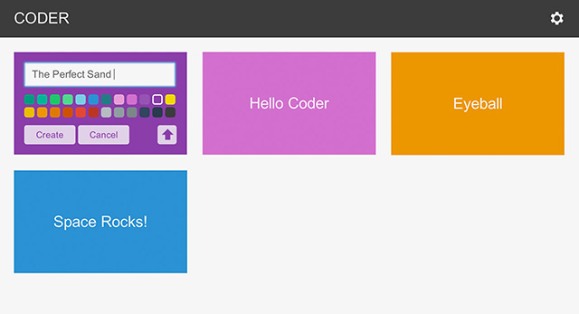
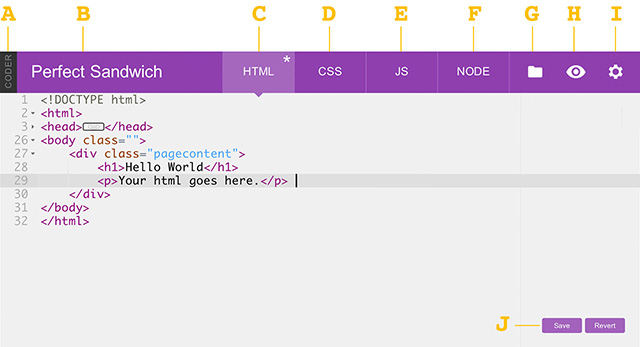
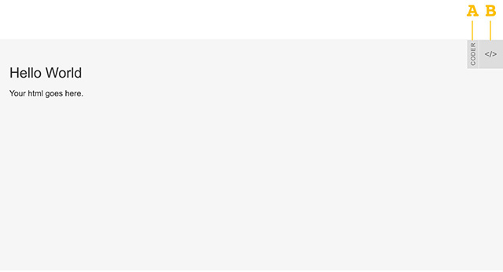
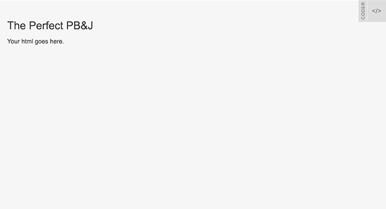
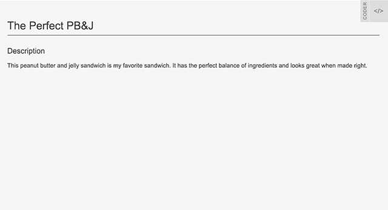
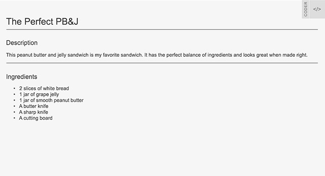

Do you have a favorite recipe that you want to share with the world? With this project we will use code to write a recipe that looks as good as it tastes.
A great project for: Foodies, chefs, sandwich aficionados, and anyone looking to learn the basics of web design and Coder.
Welcome to Coder Projects! Hopefully, you’ve already downloaded and installed Coder for Raspberry Pi. If you haven’t (or aren’t sure what Coder is) you can read about it here: http://goo.gl/coder. There’s even a quick project to get you up and running if you need a little more help.

This project will help you get started with Coder for Raspberry Pi. From plugging in your Pi to creating your first app.

Our very first step will be to create a new Coder App. On the main Coder page you will see a grid of boxes with names on them. These are projects (also called apps), and there are a few that come pre-installed on Coder. Some of them are simple (like Hello Coder) and can help you become more familiar with the program. Others are more sophisticated (like Space Rocks!) and show the potential of what you can build. But you can take a look at those anytime. Let’s make our own program!
Now we’re going to take a look around our new app. All Coder projects have the same tabs and features so let’s take a second to familiarize ourselves with them.

Code View
When you begin a new project you start in the “Code View” of Coder. What we’re looking at is the source code for our new web project, the behind-the-scenes stuff of all coder projects.
Now that we know a little bit about what’s under the hood let’s take a look at what our project looks like right now. Click the project name to see our site.

Browser View
Now this what our project looks like to other people. This is what the code in the other view is making. There’s also some things here to be aware of, as well.

Now that we know our way around let’s start coding! All Coder projects start with a little bit of code already in them so let’s use what’s there and build on it.
<h1>Hello World</h1>
<h1>The Perfect PB&J</h1>
Now that we know how to change the content of tags, let’s change a few more and add some new ones to start putting together our recipe.
<p>Your html goes here.</p>
Ours looks like this:
You code should look like this:

Now our recipe title and section title are butting into one another. That’s no good. Let’s add a line between them to keep them separate and divide the recipe into distinct sections.
Between the <h1> and <h2> tags make a new line and add a single <hr /> tag.
It should look like this:
Remember, all tags need to be closed. There are, however, some elements that are simple and don't contain content. These tags close themselves, using the slash (/) at the end of the tag.
The <hr /> tag is one of those tags. HR stands for “Horizontal Rule” and it’s an HTML element designed to divide content on a page.
Save your code and take a look. See how the <hr /> line separates the title from the description?

Any good recipe needs a list of ingredients. Fortunately HTML gives us an easy way to make list using tags.
Our code looks like this:
Now let’s add a new type of tag called an “un-ordered list.” An un-ordered list tag produces a nice list of things, each with their own bullet point. In fact, you’re reading an unordered list right now!
Un-ordered lists actually use two tags. One starts and ends the list. It looks like this <ul>. The other sits in between those tags and identifies a list item. It looks like this <li>.
Ours looks like this:
Talk about what this step does. Keep it brief and entertaining.
Here's some Javascript:
Point out any gotchas or key takeaways that were introduced in this step.
Talk about what this step does. Keep it brief and entertaining.
Here's some Javascript:
Point out any gotchas or key takeaways that were introduced in this step.
Talk about what this step does. Keep it brief and entertaining.
Here's some Javascript:
Point out any gotchas or key takeaways that were introduced in this step.
Talk about what this step does. Keep it brief and entertaining.
Here's some Javascript:
Point out any gotchas or key takeaways that were introduced in this step.
Talk about what this step does. Keep it brief and entertaining.
Here's some Javascript:
Point out any gotchas or key takeaways that were introduced in this step.
Talk about what this step does. Keep it brief and entertaining.
Here's some CSS:
And here's some HTML:
Point out any gotchas or key takeaways that were introduced in this step.
Talk about what this step does. Keep it brief and entertaining.
Here's some Javascript:
Point out any gotchas or key takeaways that were introduced in this step.
Congrats on the finished project. If you’re interested in a challeng, try to do one of the excersises below.

So far we’ve been dealing with pixel dimensions on everything. What happens if we change height and width to percents? Can you create a Mondrian-style image that fills the entire browser and scales to any dimension the window takes?
So far we’ve been dealing with pixel dimensions on everything. What happens if we change height and width to percents? Can you create a Mondrian-style image that fills the entire browser and scales to any dimension the window takes?
Like drawing with code? There’s more than just CSS/HTML and static blocks. Try these other coder projects to make more cool things and learn more useful stuff.

You've just opened the box. Inside is a new Coder device! Learn how to connect to it and program it from your computer's web browser.
Open Project
Pour your heart out, speak your mind, and look great doing it with this project. Learn to style text, place images, and create a simple web page design that’s uniquely you.
Open Project